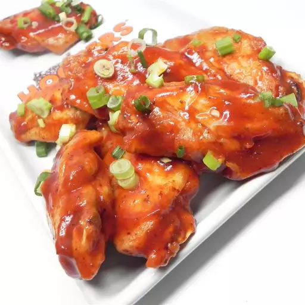

Home page
Baked BBQ Chicken Wings

Description
Baked BBQ wings are a tasty and easy-to-make dish. They are coated in a flavorful BBQ sauce and baked until crispy and tender, making them a perfect appetiser or main course for any gathering.
Ingredients
- 1 teaspoon vegetable oil
- 32 frozen chicken wings (such as Costco), defrosted
- ⅓ cup vegetable oil
- 2 tablespoons hot sauce (Optional)
- ¾ cup barbecue sauce, or more to taste
Steps
- Preheat the oven to 325 degrees F (165 degrees C). Line a jelly roll pan with aluminum foil; lightly brush with 1 teaspoon oil.
- Place wings in a single layer on the prepared pan, skin-sides up, with a little space between each wing. Brush tops of wings with 1/3 cup oil. Brush hot sauce over oil.
- Bake in the preheated oven, basting with pan juices a few times, until wings are browned, 1 1/2 to 1 3/4 hours. An instant-read thermometer inserted near the bone should read 165 degrees F (74 degrees C).
- Remove wings from baking sheet; wipe baking sheet with paper towels. Return wings to baking sheet; spread barbecue sauce on tops of wings.
- Bake in the oven for 5 minutes. Spread barbecue sauce over wings; bake 5 minutes more.